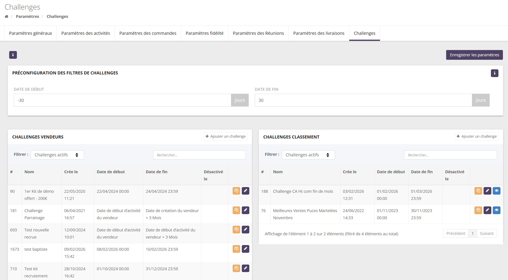
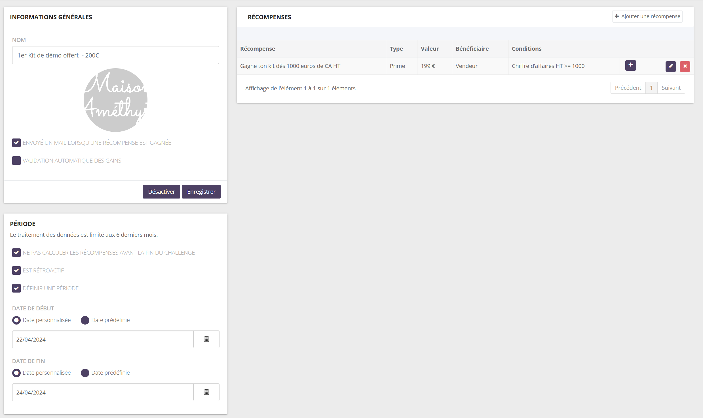
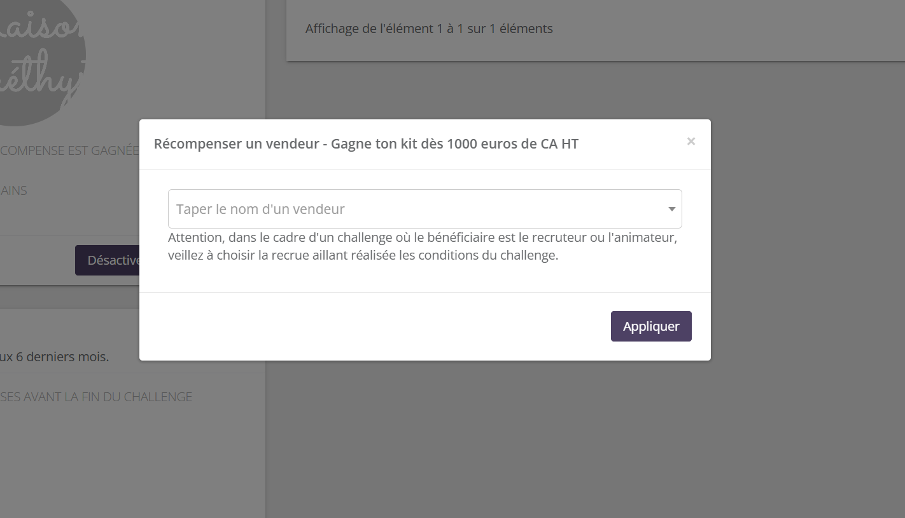

Qu'est-ce qu'un challenge ?
Un challenge est un objectif proposé aux conseillères sur une période, avec une récompense à la clé : une prime, des points, un produit, un bon d'achat… La conseillère suit sa progression dans son espace, et la plateforme détecte automatiquement les gagnants.
« Kit de démonstration offert : réalisez 1 000 € de CA HT entre le 22 et le 24 avril ». Chaque conseillère qui atteint 1 000 € de CA HT sur ces trois jours gagne une prime de 199 €.
L'interface de l'espace marque dit « vendeur » là où cette documentation dit « conseillère » (de même, « Animateur du vendeur » désigne l'animatrice et « Recruteur du vendeur » la recruteuse). Les libellés de l'écran (« Challenges vendeurs », bénéficiaire « Vendeur », conditions…) sont cités tels quels.
1.1 Les deux sortes de challenges
Chaque conseillère est jugée seule, face à un objectif. Toutes celles qui l'atteignent gagnent.
« 1 000 € de CA = prime de 100 € »
Les conseillères sont classées entre elles. Les récompenses dépendent de la position.
« Les 3 meilleures conseillères du mois gagnent un voyage »
1.2 À quoi servent les challenges ?
Accompagner les nouvelles recrues sur leurs premiers mois.
Booster le CA sur une période, une gamme ou un produit.
Récompenser le parrainage de nouvelles conseillères.
Récompenser une recruteuse ou une animatrice pour la réussite de son équipe.
Encourager le nombre de réunions et de commandes par réunion.
Créer de l'émulation avec un classement.
Le principe : un challenge, des récompenses
Un challenge vendeur est un conteneur : une période et une ou plusieurs récompenses. Chaque récompense a ses propres conditions.
2.1 Trois règles à retenir
Les récompenses sont indépendantes
Une conseillère peut gagner la première sans la deuxième, et inversement. Pour des paliers, créez une récompense par palier.
Une récompense ne se gagne qu'une fois
Une conseillère gagne une récompense donnée une seule fois. Une recruteuse peut la gagner une fois par recrue qui remplit les conditions.
Le calcul est nocturne
Les gains sont détectés chaque nuit, pas en direct. Une conseillère peut gagner avant la fin du challenge, sauf réglage contraire.
Où se paramètrent les challenges ?

| Bloc | Contenu |
|---|---|
| Préconfiguration des filtres de challenges | Les dates par défaut du filtre « du… au… » de la page Challenge de l'espace conseillère, en jours par rapport à aujourd'hui (ex. −30 / +30 : les challenges dont la période recoupe le mois passé ou le mois à venir). N'influence pas le calcul. Bouton « Enregistrer les paramètres ». |
| Challenges vendeurs | La liste, avec le filtre « Challenges actifs / Tous les challenges ». Actions : dupliquer, éditer. |
| Challenges classement | Idem, avec en plus l'œil « Voir le classement ». |
3.1 Créer un challenge vendeur
- Cliquez sur « Ajouter un challenge » dans le bloc Challenges vendeurs.
- Renseignez le nom, une photo (affichée aux conseillères), les options et la période. Cochez « Activer à l'enregistrement » si le challenge doit démarrer tout de suite.
- Cliquez sur Enregistrer. Les récompenses ne peuvent être ajoutées qu'après ce premier enregistrement.
- Cliquez sur « Ajouter une récompense » pour chaque récompense.

3.2 Les options générales
| Option | Effet |
|---|---|
| Envoyé un mail lorsqu'une récompense est gagnée | Le bénéficiaire reçoit un e-mail au moment où son gain est validé (pas au moment où il est détecté). |
| Validation automatique des gains | Les gains sont validés automatiquement, sans action de l'administrateur. Voir section 10. |
| Désactiver / Réactiver | Un challenge désactivé n'est plus calculé ni affiché aux conseillères. Les gains déjà obtenus restent. |
La période
La période définit quelles ventes, réunions et recrues comptent. Elle se règle dans le bloc Période du challenge vendeur.
4.1 Date personnalisée ou date prédéfinie
Une date fixe, la même pour toutes les conseillères. Le début est à 00:00, la fin à 23:59:59 (heure de la marque).
« Du 1er au 30 juin »
Une date propre à chaque conseillère, calculée à partir de sa fiche : date de création de la conseillère, date de début d'activité ou date de début de contrat, plus un délai éventuel.
« De la date de début d'activité à + 3 mois » : le challenge est individuel.
Le délai s'exprime en Jours, Semaines, Semaines complètes, Mois, Mois complets ou Années. Les variantes « complètes » partent de la fin de la semaine (dimanche) ou du mois en cours, pour obtenir des échéances nettes.
Calculateur de période prédéfinie
Exemple : début = date de début d'activité, fin = date de début d'activité + N.
Pour une date de fin prédéfinie, renseignez toujours un délai supérieur à 0. Sans délai, la fin tombe à 00:00 le jour de base : le challenge dure 0 jour.
4.2 Les autres réglages de la période
| Réglage | Effet |
|---|---|
| Définir une période | Décochée : pas de dates, le challenge est permanent et porte sur une fenêtre glissante d'environ 6 mois. Il ne se termine jamais. |
| Est rétroactif | Cochée : l'activité réalisée avant la création du challenge compte, si elle est dans la période. Décochée : la période ne peut pas commencer avant la date de création du challenge. |
| Ne pas calculer les récompenses avant la fin du challenge | Cochée : aucun gain n'est attribué avant la fin de la période. Le calcul a lieu la nuit qui suit la fin. Indispensable si une condition peut redevenir fausse (avoir, statut, condition « inférieur à »). |
Le calcul ne charge que l'activité des 6 derniers mois environ. Une période plus longue, ou qui commence plus tôt, perd l'activité la plus ancienne. Les challenges sont recalculés jusqu'à 15 jours après leur fin, puis plus du tout.
Les récompenses

| Champ | Rôle |
|---|---|
| Nom | Affiché à la conseillère. Soyez explicite : « Gagne ton kit dès 1 000 € de CA HT ». |
| Bénéficiaire | Qui reçoit la récompense (voir ci-dessous). |
| Type et Récompense | La nature et la valeur de la récompense. |
| Ordre d'affichage | Ordre des récompenses dans le challenge, côté conseillère et BrandAdmin. |
| Conditions | Ce que la conseillère doit réaliser (voir section 6). Sans condition, toutes les conseillères actives gagnent. |
5.1 Les types de récompense
| Type | Valeur saisie | Ce qui se passe à la validation |
|---|---|---|
| Prime | Montant | La prime est ajoutée aux commissions du bénéficiaire, sur la période de commission où le gain est marqué « Récupéré ». Voir l'attention ci-dessous. |
| Points de fidélité | Nombre de points | Les points sont crédités sur le compte client du bénéficiaire, avec la validité des points de l'onglet Vendeur (voir le Guide de la fidélité). |
| Produits | Un ou plusieurs produits | Une commande cadeau gratuite est créée (un exemplaire de chaque produit, livraison offerte, stock décrémenté), avec envoi du bon de commande. |
| Réduction | Une ou plusieurs réductions | Les réductions sont ajoutées aux codes promo du bénéficiaire. Elles doivent être restreintes à des clients (voir le Guide des réductions). |
| Bon d'achat | Un ou plusieurs bons | Les bons sont attribués au bénéficiaire, avec la validité du bon (voir le Guide des bons d'achat). |
| Remboursement de caution | Montant | Rien d'automatique : c'est une information pour vos équipes, à traiter manuellement. |
Valider une prime ne suffit pas : elle n'entre dans les commissions qu'au moment où le gain est marqué Récupéré (icône cadeau dans l'onglet Récompenses de challenge). Elle est versée avec les commissions de la période de ce clic. Pensez-y à chaque clôture de commissions.
Les récompenses Points, Produits, Réduction et Bon d'achat nécessitent que le bénéficiaire ait un compte client. Pour les points, sans compte client, aucun point n'est crédité alors que le gain apparaît validé.
5.2 Les bénéficiaires
La conseillère qui a rempli les conditions.
Sa recruteuse (parrain de recrutement). Elle gagne une fois par recrue qui remplit les conditions.
Son animatrice actuelle (dernier rattachement). Elle gagne une fois par conseillère animée qui remplit les conditions.
Récompense « Recruteur du vendeur », prime de 50 €, condition « Chiffre d'affaires HT ≥ 500 » sur les 3 premiers mois d'activité. Une recruteuse dont trois recrues atteignent 500 € gagne trois primes de 50 €.
Les conditions sont toujours évaluées sur la conseillère, jamais sur la recruteuse ou l'animatrice bénéficiaire.
Comment fonctionnent les conditions
6.1 ET, OU et groupes
Les conditions d'une récompense se combinent en ET (toutes doivent être vraies) ou en OU (une seule suffit). Le bouton à double étiquette ajoute un groupe, avec son propre ET/OU (un seul niveau de groupe).
« Statut vendeur est dans Conseillère » ET (« Chiffre d'affaires HT ≥ 1 000 » OU « Nombre de réunions ≥ 5 »).
6.2 Conditions « objectif » et conditions « filtre »
CA, produits, réunions, recrues… La conseillère voit la condition et sa progression en %.
Statut, rôle, pays, dates. Elles disent qui participe. Si un filtre placé au premier niveau n'est pas rempli, la récompense est masquée pour cette conseillère. Rempli, il s'affiche « Oui ».
6.3 Ce qui est compté sur la période
| Élément | Règle |
|---|---|
| Commande | Comptée si elle est payée, non supprimée, et que son premier paiement validé tombe dans la période. Les frais de port ne comptent jamais. |
| Avoir | Déduit à sa date de création, même si la commande a été payée avant la période. |
| Réunion | Comptée à sa date de début. |
| Recrue / filleul | Compté à sa date de parrainage. |
6.4 CA ou CA commissionnable ?
Chiffre d'affaires (TTC ou HT)
Prix des produits après remises, moins la cagnotte et les points de fidélité utilisés, moins les avoirs. Toutes les commandes de la conseillère comptent, y compris ses commandes personnelles.
Chiffre d'affaires commissionnable
Le même calcul, limité aux produits commissionnables (hors produits non commissionnés et produits à commission fixe), selon les réglages de votre plan de commissionnement : exclusion des commandes du compte client de la conseillère, points de fidélité commissionnés ou non, répartition des remises.
6.5 Que signifie « équipe » ?
L'équipe d'une conseillère, c'est toute sa descendance (filleuls, filleuls des filleuls… sans limite de niveau), d'après les rattachements d'animation. « Équipe » exclut la conseillère ; « équipe (vendeur inclus) » l'ajoute. Seules les conseillères actives comptent : une conseillère inactive coupe sa branche.
6.6 La progression affichée à la conseillère
Pour un objectif « ≥ », la progression = réalisé ÷ objectif, plafonnée à 100 %. Avec plusieurs conditions en ET, c'est la moyenne des progressions. Les conditions « inférieur », « différent » ou de profil valent 0 % ou 100 %.
Les conditions disponibles
Les libellés sont ceux de l'écran. La liste proposée dans votre back-office dépend des conditions activées pour votre marque (voir section 8).
7.1 Chiffre d'affaires de la conseillère
| Condition | Saisie | Ce qu'elle mesure |
|---|---|---|
| Chiffre d'affaires TTC / HT | Montant | Le CA de la conseillère sur la période. |
| Chiffre d'affaire Commissionnable TTC / HT | Montant | Le CA commissionnable de la conseillère. |
| Chiffre d'affaires TTC / HT pour le catalogue | Catalogue + montant | Le CA des commandes d'un catalogue choisi.une commande sans catalogue fait échouer la récompense pour cette conseillère. |
| CA commissionnable TTC / HT pour le catalogue | Catalogue + montant | Le CA commissionnable d'un catalogue choisi. |
| CA commissionnable TTC pour la catégorie | Catégorie + montant | Le CA commissionnable des produits d'une catégorie et de ses sous-catégories. |
| CA commissionnable fixe | Montant | Le total des commissions à montant fixe gagnées par la conseillère sur ses ventes, avoirs déduits. |
7.2 Chiffre d'affaires de l'équipe
| Condition | Saisie | Ce qu'elle mesure |
|---|---|---|
| Chiffre d'affaires TTC / HT de l'équipe | Montant | Le CA de toute la descendance, sans la conseillère. |
| … de l'équipe (vendeur inclus) | Montant | Le même CA, avec les ventes de la conseillère. |
| Chiffre d'affaires commissionnable TTC / HT de l'équipe (avec ou sans la conseillère) | Montant | Le CA commissionnable de l'équipe. |
Dans le suivi d'activité de la conseillère, la progression « équipe » ne compte que son premier niveau : elle peut paraître plus faible que le calcul réel, qui porte sur toute l'équipe.
7.3 Points personnalisés
Disponibles si votre marque utilise des points personnalisés. Le libellé reprend le nom de vos points (« Étoiles du vendeur »…).
| Condition | Saisie | Ce qu'elle mesure |
|---|---|---|
| {points} du vendeur | Nombre | Les points cumulés sur les commandes de la conseillère.les avoirs ne sont pas déduits. |
| {points} de l'équipe (avec ou sans la conseillère) | Nombre | Les points de la descendance. |
7.4 Produits et clients
| Condition | Saisie | Ce qu'elle mesure |
|---|---|---|
| Nb total de produits vendus | Nombre | La quantité totale d'articles vendus, retours déduits.tous les articles comptent, y compris services et produits du catalogue fidélité. |
| Nb de produit vendus pour la catégorie | Catégories + nombre | La quantité vendue dans les catégories choisies et leurs sous-catégories. |
| Nb de quantité vendue pour le produit | Produit + nombre | La quantité vendue d'un produit (ou d'une déclinaison).un seul produit est pris en compte : sélectionnez-en un seul. |
| Nombre de clients un nombre commande supérieur ou égal à | Nb de clients + nb de commandes | Le nombre de clients distincts de la conseillère ayant passé au moins N commandes sur la période. Ex. : « au moins 10 clients avec 2 commandes ou plus ». |
7.5 Réunions
| Condition | Saisie | Ce qu'elle mesure |
|---|---|---|
| Nombre de réunions | Nombre | Les réunions de la conseillère démarrées dans la période, hors réunions annulées. |
| Nombre de réunions pour le catalogue | Catalogue + nombre | Les réunions d'un catalogue choisi.les réunions annulées sont comptées. |
| Nombre moyen de commande par réunion | Nombre | Le nombre moyen de commandes par réunion.les commandes non payées et les réunions annulées sont comptées. Sans réunion, la condition est fausse. |
| Nombre de réunions redatées | Nombre | Les réunions prises depuis une autre réunion et ayant au moins une commande. |
7.6 Recrutement
| Condition | Saisie | Ce qu'elle mesure |
|---|---|---|
| Nombre de nouveau vendeur filleul par recrutement (n-1) | Nombre | Les nouvelles recrues : conseillères dont elle est la toute première recruteuse, parrainées dans la période. |
| Nombre de nouveau vendeur filleul par animation (n-1) | Nombre | Les conseillères qui lui sont rattachées dans la période, y compris celles reprises d'un autre parrain. Toujours supérieur ou égal au précédent. |
7.7 Profil de la conseillère (conditions filtre)
| Condition | Saisie | Ce qu'elle vérifie |
|---|---|---|
| Statut vendeur | Liste de statuts | Le statut de la conseillère. Par défaut, le statut au début de la période et tous les statuts traversés pendant la période. Avec « Ne pas calculer avant la fin », seul le statut à la fin de la période compte.avec « n'est pas dans », il suffit d'avoir eu un statut de la liste pendant la période pour être exclue. |
| Statut du recruteur | Liste de statuts | Le statut de la recruteuse (parrain de recrutement), même logique. |
| Statut de l'animateur | Liste de statuts | Le statut de l'animatrice, même logique. |
| Rôles vendeur | Liste de rôles | Les rôles actuels de la conseillère. « égal » : exactement ces rôles ; « est dans » : au moins un. |
| Pays du vendeur | Liste de pays | Le pays de l'adresse du compte client de la conseillère (à défaut, de son adresse de conseillère). Sans adresse, la condition est fausse. |
| Date de début de contrat | Date | La date de début de contrat de la conseillère. Ex. : réserver une récompense aux conseillères entrées après le 1er janvier. |
| Date de début d'activité du vendeur | Date | Même principe, avec la date de début d'activité. |
7.8 Conditions sur mesure
Certaines conditions ont été développées pour une marque et ne sont activées que pour elle : filleuls qualifiés (filleuls ayant atteint un seuil de CA), CA converti en points selon des barèmes propres, date de création de la conseillère, CA de regroupement clôturé… Si l'une apparaît dans votre back-office, son fonctionnement vous a été présenté lors de sa mise en place.
7.9 Position au classement
Réservée aux récompenses des challenges classement : la position de la conseillère dans le classement. Ex. : « Position au classement ≤ 3 » pour le podium. Voir section 12.
Quelles conditions sont proposées à votre marque ?
La liste des conditions proposées est gérée par l'équipe SellingAtHome :
- Les conditions standard sont proposées par défaut.
- Les conditions par catalogue et les conditions sur mesure ne sont activées que pour les marques concernées.
- Les conditions de points personnalisés n'apparaissent que si votre marque utilise des points personnalisés.
Une condition qui n'apparaît pas dans votre back-office n'est pas activée pour votre marque : contactez votre interlocuteur SellingAtHome. Si une condition est retirée de votre marque, les récompenses qui l'utilisent ne peuvent plus être gagnées.
Le calcul des gains
Une fois créé, un gain reste, même si un avoir ou une annulation fait ensuite redescendre la conseillère sous l'objectif. Si ce risque compte pour vous, cochez « Ne pas calculer les récompenses avant la fin du challenge » : les gains ne seront attribués qu'une fois la période close.
Sur demande, SellingAtHome peut activer les gains immédiats : la récompense est calculée et validée dès le paiement de la commande, sans attendre la nuit. Cela concerne les récompenses au bénéficiaire Vendeur, en validation automatique, sans l'option « Ne pas calculer avant la fin ». L'écran signale ces récompenses par la mention « Eligible aux gains immédiats ».
Valider et récupérer les gains
| Étape | Ce qui se passe |
|---|---|
| Valider | Automatique si « Validation automatique des gains » est cochée, sinon bouton Valider. Les points, produits, réductions et bons d'achat sont attribués ; une notification et, si l'option est cochée, un e-mail partent vers le bénéficiaire. |
| Récupérer | Bouton Récupéré (icône cadeau) : indique que la récompense a été remise. Indispensable pour les primes, qui ne sont payées qu'à partir de ce clic. |
| Supprimer | Retire le gain de la liste. Ne reprend pas ce qui a déjà été attribué (points, bons, commande cadeau), et la conseillère ne pourra plus regagner cette récompense. |
Des filtres permettent d'afficher les gains non validés, non récupérés ou supprimés. Côté conseillère, la récompense apparaît « En attente de validation », « Validée » puis « Reçue le … ».
Récompenser une conseillère manuellement
Dans la liste des récompenses du challenge, le bouton + ouvre la fenêtre « Récompenser un vendeur » : choisissez une conseillère et cliquez sur Appliquer.

- Les conditions ne sont pas vérifiées : c'est un geste de l'administrateur.
- Si le bénéficiaire est la recruteuse ou l'animatrice, choisissez la recrue qui a réalisé le challenge : sa recruteuse ou son animatrice sera récompensée.
- Le gain est validé immédiatement si la validation automatique est active.
Les challenges classement
Un challenge classement range les conseillères selon une performance et récompense les mieux placés.
| Élément | Rôle |
|---|---|
| Date de début / Date de fin | Toujours des dates fixes (00:00 – 23:59). |
| Règle de classement | La performance qui sert à classer : une condition chiffrée (ex. Chiffre d'affaire Commissionnable HT, Nombre de nouvelles recrues). |
| Règles d'éligibilité | Qui participe (ET/OU) : statut, rôle, pays… Seules les conseillères éligibles sont classées. |
| Récompenses | Conditionnées par la Position au classement : « = 1 » pour le premier, « ≤ 3 » pour le podium, « entre 4 et 10 »… |
- Le classement est mis à jour régulièrement ; la date de dernière mise à jour s'affiche.
- Ex æquo : deux conseillères à égalité ont la même position, et la suivante est sautée (1, 1, 3). Les deux gagnent la récompense de la position 1.
- Les gains sont générés le lendemain de la date de fin, sur le classement final.
- L'œil « Voir le classement » affiche le classement (position, conseillère, performance), les règles et les récompenses, avec une recherche par conseillère.
- Choisissez une règle de classement chiffrée (CA, produits, réunions, recrues). Les conditions de profil (statut, rôle, pays, dates) ne mesurent rien et donnent un classement vide de sens.
- Les conditions des récompenses d'un classement sont toujours lues en ET, sans groupe.
- Une récompense désactivée dans un challenge classement est quand même attribuée : supprimez-la plutôt.
- Le classement inclut toutes les conseillères de la marque, y compris inactives : filtrez avec les règles d'éligibilité (ex. statut).
- La récompense « Statut » n'existe pas pour les classements.
Ce que voit la conseillère
Dans son espace, menu Suivi d'activité › Challenge :
- Ses challenges en cours et terminés, avec la photo, les dates et les jours restants.
- Pour chaque récompense, chaque condition objectif et sa progression.
- Un onglet pour les résultats de ses recrues, et un onglet classement.
- Le statut de ses gains : en attente de validation, validée, reçue.
- Des pastilles « nouveau » pour un nouveau challenge ou une récompense gagnée, et des notifications.
Le filtre de dates de cette page est pré-rempli avec la préconfiguration des filtres de l'onglet Challenges.
Les conseillères sont notifiées lorsqu'un challenge est activé avec au moins une récompense. Préparez le challenge complet avant de l'activer.
Dupliquer, désactiver, supprimer
| Action | Effet |
|---|---|
| Dupliquer | Copie le challenge et ses récompenses, nommé « … - Copie ». La copie est créée désactivée : adaptez les dates puis activez-la. Idéal pour un challenge mensuel. |
| Désactiver | Le challenge n'est plus calculé ni affiché. Les gains existants restent. Réactivable. |
| Désactiver une récompense | La récompense n'est plus calculée (challenges vendeurs). |
| Supprimer | Possible seulement pour un challenge sans gagnant, si la fonction a été activée pour votre marque. |
Modifier une récompense après coup ne change pas les gains déjà obtenus : leur type et leur valeur sont figés au moment du gain.
Les paramétrages courants
Des configurations types, à adapter à votre marque.
| Usage | Paramétrage typique |
|---|---|
| Challenge de démarrage | Période prédéfinie « date de début d'activité → + 3 mois », récompense Produits (kit) ou Prime avec une condition de CA, bénéficiaire Vendeur |
| Paliers de CA du mois | Période personnalisée, une récompense par palier (CA ≥ 300, ≥ 600, ≥ 1 000), types Bon d'achat ou Prime |
| Récompense de la recruteuse | Bénéficiaire « Recruteur du vendeur », condition de CA de la recrue sur ses premiers mois |
| Challenge produit | Condition « Nb de quantité vendue pour le produit » ou « Nb de produit vendus pour la catégorie » |
| Challenge réunions | Conditions « Nombre de réunions » et « Nombre moyen de commande par réunion » |
| Classement mensuel | Challenge classement sur le « Chiffre d'affaire Commissionnable HT », récompenses Produits par position, éligibilité par statut |
| Options | Paramétrage courant : période définie, rétroactif, validation automatique et e-mail de gain |
Points d'attention
| Sujet | Comportement | Conseil |
|---|---|---|
| Primes | Payées seulement après le clic « Récupéré ». | Marquer les primes récupérées avant chaque clôture de commissions. |
| Récompense sans condition | Toutes les conseillères actives la gagnent. | Toujours ajouter au moins une condition. |
| Gain jamais retiré | Un avoir ou une annulation après le gain ne le reprend pas. | « Ne pas calculer avant la fin » pour les challenges sensibles. |
| Fenêtre de 6 mois | L'activité plus ancienne n'est pas chargée. | Périodes de 6 mois maximum. |
| Fin prédéfinie sans délai | Le challenge dure 0 jour. | Toujours un délai > 0. |
| Non rétroactif | L'activité antérieure à la création du challenge ne compte pas. | Créer le challenge avant son début, ou cocher « Est rétroactif ». |
| Statut « n'est pas dans » | Avoir traversé un statut exclu pendant la période suffit à être exclu. | — |
| Récompense Points sans compte client | Le gain paraît validé mais aucun point n'est crédité. | Vérifier que les conseillères ont un compte client. |
| Récompense « Statut » | Ne fonctionne pas actuellement. | Changer le statut manuellement. |
| Récompense manuelle | Conditions non vérifiées ; pour une recruteuse ou une animatrice, rien n'empêche d'attribuer deux fois. | Vérifier la liste des gains avant d'attribuer. |
| Classement | Ex æquo toutes gagnantes ; OU ignoré dans les récompenses ; récompense désactivée quand même attribuée ; conseillères inactives classées. | Voir section 12. |
| Image d'un classement | Elle peut être perdue si le challenge est réenregistré. | Ajouter l'image en dernier, et la vérifier. |
| Suppression d'un challenge | Un challenge avec un seul gagnant peut être supprimé par erreur. | Ne supprimer que des challenges vérifiés sans gagnant ; préférer la désactivation. |
| Progression « équipe » | Affichée sur le premier niveau seulement. | Le calcul réel porte sur toute l'équipe. |
Questions fréquentes
Une conseillère a atteint l'objectif mais n'a pas de gain.
- Le calcul est nocturne : attendez le lendemain.
- « Ne pas calculer avant la fin » est-il coché ?
- Les commandes sont-elles payées, avec un premier paiement dans la période ?
- Une condition filtre (statut, rôle, pays) n'est-elle pas remplie ?
- Le challenge est-il rétroactif si l'activité date d'avant sa création ?
- La conseillère est-elle active ?
La conseillère ne voit pas une récompense.
Une condition filtre n'est pas remplie pour elle, ou le challenge est désactivé, ou sa période ne recoupe pas le filtre de dates de sa page.
La prime validée n'apparaît pas dans les commissions.
Marquez le gain comme « Récupéré » : la prime sera intégrée aux commissions de la période de ce clic.
Comment créer des paliers ?
Une récompense par palier dans le même challenge : CA ≥ 300 → récompense 1 ; CA ≥ 600 → récompense 2… Les récompenses sont indépendantes et se cumulent.
Comment faire un challenge différent pour chaque nouvelle recrue ?
Utilisez des dates prédéfinies : début = date de début d'activité, fin = date de début d'activité + 3 mois. Chaque conseillère a sa propre période.
Le CA affiché ne correspond pas à mes exports.
Vérifiez s'il s'agit du CA ou du CA commissionnable, en TTC ou en HT, et la date retenue : celle du premier paiement validé de la commande.
Glossaire
| Terme | Définition |
|---|---|
| Challenge vendeur | Chaque conseillère face à un objectif. |
| Challenge classement | Conseillères classées entre elles, récompensées selon leur position. |
| Récompense | Ce qui est gagné, avec son bénéficiaire et ses conditions. |
| Gain | Une récompense obtenue par une conseillère. |
| Vendeur lié | La conseillère qui a rempli les conditions (différente de la bénéficiaire pour une recruteuse ou une animatrice). |
| Date prédéfinie | Date de période propre à chaque conseillère. |
| Rétroactif | Prise en compte de l'activité antérieure à la création du challenge. |
| CA commissionnable | CA limité aux produits commissionnables, selon le plan de commissionnement. |
| Équipe | Toute la descendance d'une conseillère. |
| Récupéré | Gain remis à la conseillère ; déclenche le paiement des primes. |